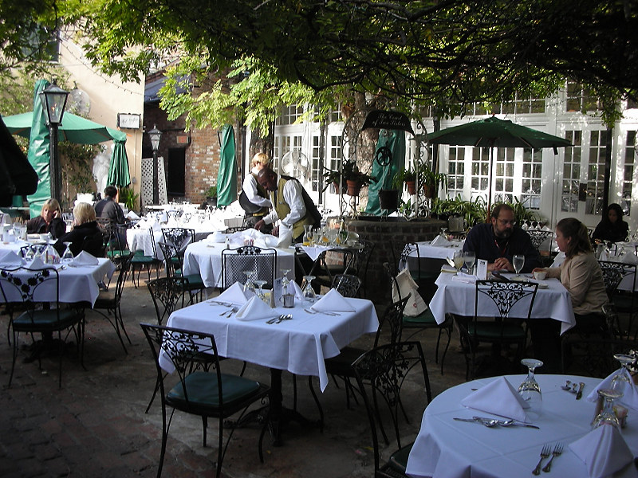

Johnnie and Oberta Baker's Photo Album Gallery Previous Next
|

The courtyard and adjacent buildings were said to be the residence of the Grand Marquis, Pierre Cavagnal du Ropaud in the 18th century. The court is amed for the legendary sisters who ran a millinery shop there for a good part of the 19th century. |